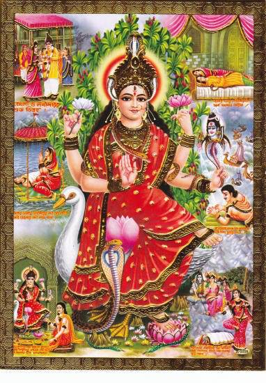

By High Priest Mageson666
In the ancient cultures of the Viracocha's Aryans in south America the word Mana is what is used for spiritual power this is the same in the Far East regions. In Hinduism the ancient serpent Goddess is called Manas and Manasa and relates to the moon. In the ancient Greek Mana means Mother and Monad is actually spelled Monas in ancient Greek. And in the runes Mana and also spelled Manas is an important rune and also means moon.
The Goddess Manasa:

In the Sanskrit texts Manas also spelled Manasa and Mana is given to the Ajna chakra the sixth chakra. But also to the region of the pineal gland. The concept of this was stolen by the Jews and put in their bible as the "manna from heaven" they make a big deal out of this in their kabala. Just more stolen and corrupted information. The ancient Greeks call Mana the golden rain or dew from heaven. This relates to the whitening of the metals the transformation of the chakra's by the Amrita or golden rain. This Golden rain is also called the Golden nectar in Taosim and is described as the taste in the mouth that comes with the activation of the pineal region in the head. The White is also the color of the dew or drop of Shiva which relates to the Moon center. Mana is a stolen mantra to activate the pineal region. In Sanskrit it rules the total enlightenment of the mind.
Sources
The Greek Kabala, Barry
The Magicians Of The Gods, Graham Hancock
The Return Of The Serpents Of Wisdom, Pinkham
Mary Magdalene: The Illuminator, William Henry